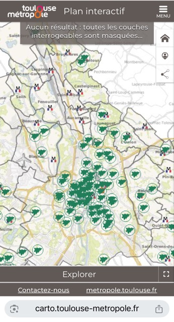
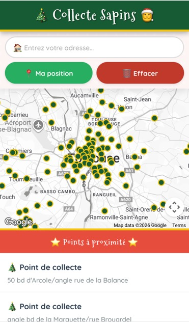

Où jeter son sapin ? (La version simple)
Avez-vous avez essayé de trouver un point de collecte sur le site officiel de la Mairie ? Vous avez dû sentir monter une légère moutarde.
C'est une expérience... disons, rustique. Entre la carte noyée sous les icônes et la liste d'adresses en format texte brut, c'est un peu "Cherchez Charlie", version épines.

La carte : bonne chance.

La liste : courage.
Plutôt que de râler, j'ai décidé de construire ma propre carte, juste en dessous.
🎄 Carte des Sapins 🎅
⭐ Points à proximité ⭐
⚠️ Note Technique & "Disclaimers"
Cet outil magique fonctionne grâce à deux choses précaires :
- L'Open Data de Toulouse Métropole : Je récupère leurs données en direct. S'ils décident de modifier le nom des colonnes ou de couper le flux, ma carte deviendra vide.
- L'API Google Maps : C'est ce qui affiche la carte. C'est payant au-delà d'un certain trafic. Si trop de requêtes sont faites, je débranche, l'écran deviendra gris.
- C'est d'ailleurs sûrement pout ça que la mairie se coltine OpenStreetMap...
Souvenir préventif :
Au cas où tout s'effondre (API en panne, serveur en feu, fin du monde), voici une capture d'écran de mon outil quand il fonctionnait encore magnifiquement bien. Imprimez-la et mettez-la dans un cadre.
